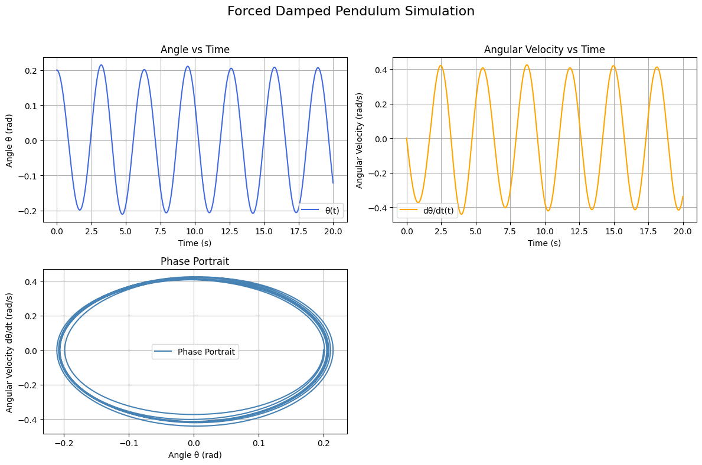

Problem 2
Step 1: Theoretical Foundation
We consider the equation for a forced damped pendulum:
This includes damping \(b\), gravity \(g\), length \(L\), and periodic forcing \(A\cos(\omega t)\). To solve it numerically, we rewrite it as a system of first-order ODEs.
Step 1.1: Approximate Solution for Small-Angle Oscillations
To simplify the analysis, we consider the small-angle approximation:
Substituting this into the original equation gives a linear second-order nonhomogeneous differential equation:
This is a standard linear ODE with constant coefficients and a cosine forcing term. The general solution consists of two parts:
1. Homogeneous Solution
Solve the homogeneous equation:
Assume a solution of the form \(\theta_h(t) = e^{\lambda t}\):
Then:
Solve the characteristic equation:
- If the discriminant \(D = b^2 - 4\frac{g}{L} > 0\): overdamped
- If \(D = 0\): critically damped
- If \(D < 0\): underdamped (oscillatory), which gives:
where:
2. Particular Solution
Assume a solution of the form:
Plug into the ODE and match coefficients. After simplification:
The steady-state solution is:
where the phase shift \(\delta\) is given by:
Final Approximate Solution:
Combining both parts:
In the long term, the homogeneous part decays due to damping, and the system reaches a steady-state periodic solution with amplitude and phase depending on \(A\), \(b\), \(\omega\), and \(\frac{g}{L}\).
This approximation is useful for analyzing resonance and predicting the system’s response under small displacements.
Step 2: System of Equations. Analysis of Dynamics:
Let:
\(x_1 = \theta\)
\(x_2 = \frac{d\theta}{dt}\)
Then:
Step 3: Angle and Phase Space Simulation
The forced damped pendulum model is relevant to various engineering and physical systems. Some real-world examples include:
- Energy harvesting systems, where mechanical vibrations are converted into electrical energy using oscillating parts.
- Suspension bridges, where damping and periodic forces play a role in stabilizing the structure under wind or traffic loads.
- Oscillating electrical circuits (e.g., RLC circuits), which behave analogously to mechanical oscillators with damping and driving forces.
- Biomechanics, such as modeling the motion of limbs or joints under muscle activation and external load.
Step 4: Poincaré Section
Python Code: Combined Pendulum Plots (θ(t), ω(t), Phase Portrait) python
import numpy as np
import matplotlib.pyplot as plt
from scipy.integrate import solve_ivp
# Parameters
g = 9.81
L = 1.0
b = 0.3
A = 1.2
w = 2.0
# Initial conditions
theta0 = 0.2
omega0 = 0.0
y0 = [theta0, omega0]
# Time setup
t_start = 0
t_end = 20
num_points = 5000
t_vals = np.linspace(t_start, t_end, num_points)
# Define the system
def pendulum(t, y):
theta = y[0]
omega = y[1]
dtheta_dt = omega
domega_dt = -b * omega - (g / L) * np.sin(theta) + A * np.cos(w * t)
return [dtheta_dt, domega_dt]
# Solve the system
sol = solve_ivp(pendulum, [t_start, t_end], y0, t_eval=t_vals)
theta = sol.y[0]
omega = sol.y[1]
time = sol.t
# Plot results in subplots
fig, axs = plt.subplots(2, 2, figsize=(12, 8))
fig.suptitle('Forced Damped Pendulum Simulation', fontsize=16)
# θ(t)
axs[0, 0].plot(time, theta, label='θ(t)', color='royalblue')
axs[0, 0].set_title('Angle vs Time')
axs[0, 0].set_xlabel('Time (s)')
axs[0, 0].set_ylabel('Angle θ (rad)')
axs[0, 0].grid(True)
axs[0, 0].legend()
# ω(t)
axs[0, 1].plot(time, omega, label='dθ/dt(t)', color='orange')
axs[0, 1].set_title('Angular Velocity vs Time')
axs[0, 1].set_xlabel('Time (s)')
axs[0, 1].set_ylabel('Angular Velocity (rad/s)')
axs[0, 1].grid(True)
axs[0, 1].legend()
# Phase portrait: ω vs θ
axs[1, 0].plot(theta, omega, label='Phase Portrait', color='steelblue')
axs[1, 0].set_title('Phase Portrait')
axs[1, 0].set_xlabel('Angle θ (rad)')
axs[1, 0].set_ylabel('Angular Velocity dθ/dt (rad/s)')
axs[1, 0].grid(True)
axs[1, 0].legend()
# Hide unused subplot
axs[1, 1].axis('off')
plt.tight_layout(rect=[0, 0, 1, 0.96])
plt.show()

Explanation of the Code
-
Parameters: The script defines physical parameters including \(g\) (gravity), \(L\) (length), \(b\) (damping), \(A\) (amplitude of forcing), and \(\omega\) (driving frequency).
-
ODE System: The nonlinear second-order differential equation is rewritten as a system of first-order ODEs:
$$ \frac{d\theta}{dt} = \omega, \quad \frac{d\omega}{dt} = -b\omega - \frac{g}{L} \sin\theta + A \cos(\omega t) $$
-
Numerical Solution: The system is solved using
solve_ivpfromscipy.integrate, which implements a Runge-Kutta method with adaptive time stepping. -
Plots:
- \(\theta(t)\) — Angle over time
- \(\dot{\theta}(t)\) — Angular velocity over time
- Phase portrait — \(\dot{\theta}\) vs. \(\theta\)